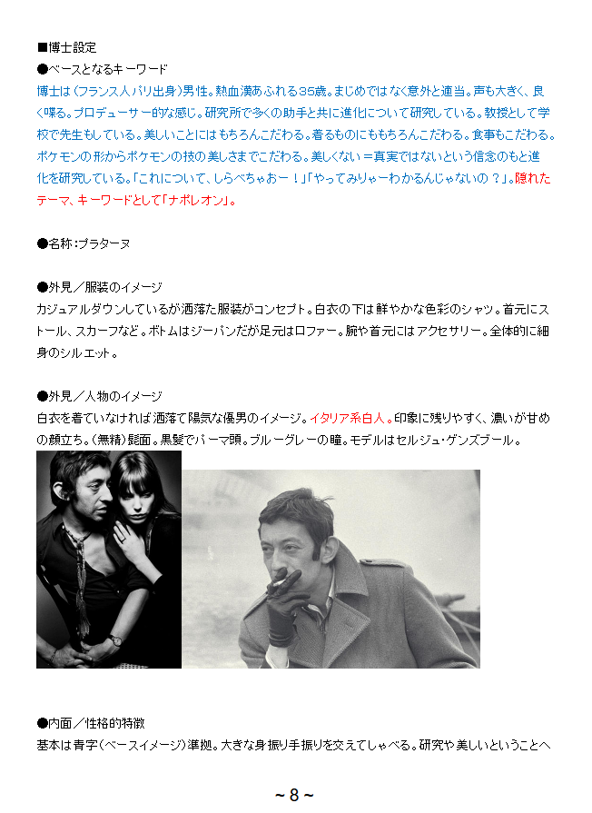

This information is sourced from the 2024 Gamefreak leaks. Please be aware that south-boulevard does not endorse or support illegal activities such as hacking, doxxing, phishing, or any form of cybercrime. The information shown here and other content here presented are for informational and entertainment purposes only. I'm only posting the information related to Professor Sycamore. More will be added if/when found.
Additionally, it should be noted that the information here is non-canon due to its unofficial status. Names, ages, appearances, etc. may not be true to in-game names, ages, or appearances, and should not be regarded as canonical confirmation for anything. This is just for fun, after all!
Beta Information
During the 2024 Gamefreak leaks, there was a lot of inside information brought to light, particularly around character concepts, regional concepts, and so on. Not just in the sense of concept art, but many biographies were unearthed of what appears to be initial directions for characters. Most popular of those are trainers like Skyla, of course! But many prominent and less-than-prominent trainers have their basics outlined, including Professor Sycamore.

Original Japanese
■博士設定
●ベースとなるキーワード
博士は（フランス人バリ出身）男性。熱血漢派ぶられる35歳。まじめではなく意外と通当。声も大きく、良く喋る。プロデューサー的な感じ。研究所で多くの助手と共に進歩について研究している。教授として Gekoolで先生もしている。美しいことはもちろんごだわる。春らあめにもちろんこだわる。長春もこだわる。
ポケモンの形からポケモンの技の美しさまでこだわる。美しくない＝負責ではないという信念のもと進化研究している。これについて、しらベちゃあー！」「やってみりゅーわからんじゃないの？」。据れたテーマ、キーワードとして「ボルジュウ」。
●名称：プラターヌ
●外見／服装のイメージ
カジュアルダウンているが恰好的で服装がコンセプト。白衣めいず門は群やかな色づのシャツ。首元にストール、スカーフなど。ボトムはジーンズたがに足元はローファー。飾り長首無しはアクセサリー。全体的に細身のシルエット。
●外見／人物のイメージ
白衣を着ていなければ上品で棒気な優男のイメージ。イタリア系白人。印象に残りやすく、漕いが甘めの親立つ。（無精）髭面。髪髪でハーフ頭。ブルーグレーの髪。モデルはセルジュ・ゲンズブール。
●内面／性格的指摘
基本は青学（ベースイメージ）準拠。大きな身振り手振りを交えてしゃべる。研究や美しいということへ
〜８〜
While I'm unable to translate this myself with my limited knowledge of Japanese, with the use of DeepL, we can get a rough translation.
Rough English Translation
- Dr. Setting - Base Keywords:
- Male, from Bali, France, aged 35
- Hot-blooded and passionate
- Not serious, surprisingly well-informed
- Loud voice, talks a lot, producer-like
- Studies progress with assistants in a laboratory
- Teaches at a school as a professor
- Obsessed with beauty, including Chun La Ame and Changchun
- Particular about Pokémon shapes and technique beauty
- Believes “not beautiful” does not mean "negative responsibility"
- Conducts evolutionary research based on this belief
- Uses phrases like “Shirabechaa!” and “Don’t you understand?”
- Theme and keyword: “Borjou”
- Name: Platane
- Appearance/Clothing Image:
- Casual but stylish clothing concept
- Wears a bright-colored shirt, not a white coat
- Scarf or stole around the neck
- Jeans with loafers
- No long necklaces, minimal accessories
- Slender silhouette overall
- Appearance/Personal Image:
- Refined, handsome without a lab coat
- Italian Caucasian, memorable impression
- Sweetly parental, stubbled face
- Medium-length, tousled blue-gray hair
- Modeled after Serge Gainsbourg
- Internal/Personality Remarks:
- Conforms to a charismatic academic archetype
- Speaks with large gestures
- Passionate about research and beauty
Fantastic! Now I can get a good look at their intentions behind the character. Let's try to clean up the English version a little while retaining its meaning.
Localized
- Professor Profile - Keywords and Concept:
- French male, age 35
- Passionate and energetic
- Not overly serious, surprisingly casual
- Loud but articulate voice, talks a lot
- Producer-like personality
- Conducts research with assistants, focusing on progress and innovation
- Teaches children at school
- Obsessed with beauty, particularly:
- The aesthetics of spring and late spring
- Beauty in Pokémon design and techniques
- Believes “a lack of beauty doesn’t mean lack of value”
- Expresses himself with phrases like “Let’s look into this!” or “You won’t know until you try!!”
- Thematic word: Bourgeon (French for ‘Bud’), symbolizing growth and beauty
- Name: Platane
- Appearance and Fashion:
- Casual but smart and fashionable style
- Vividly colored shirts beneath a white lab coat
- Scarf or stole around the neck
- Wears jeans and loafers
- No flashy jewelry, minimal accessories
- Slender, stylishly understated silhouette
- Visual and Personal Impression:
- Elegant, refined aura without a lab coat
- Italian Caucasian appearance
- Memorable, soft, and charming features
- Scruffy chin, tousled blue-gray hair
- Modeled after Serge Gainsbourg
- Personality Traits:
- Charismatic academic archetype (stylish, elite persona)
- Speaks with exaggerated gestures and dramatic flair
- Deeply passionate about research and beauty
If you are Japanese speaker, please let me know about the accuracy of these translations, thank you!
Original Translation from 4chan
■ Doctor Setting
● Base Keywords
The doctor is a man (French, from Paris). 35 years old, full of passion. Not serious, but surprisingly careless. He has a loud voice and talks a lot. He has a producer-like feel. He studies evolution with many assistants at the research lab. He also teaches at school as a professor. He is particular about beauty, of course. He is particular about what he wears, and about what he eats. He is particular about everything from the shape of Pokemon to the beauty of Pokemon's moves. He studies evolution under the belief that if it is not beautiful, it is not true. "Let's find out about this!" "You'll understand if you try it, won't you?" The hidden theme and keyword is "Napoleon".
● Name: Sycamore
● Appearance/Clothing Image
The concept is casual but stylish clothing. A brightly colored shirt under the lab coat. A stole or scarf around the neck. Jeans on the bottom, but loafers on the feet. Accessories on the arms and neck. Overall slim silhouette.
●Appearance/Personal Image
When he's not wearing his white coat, he has the image of a stylish, cheerful, gentle man. Caucasian of Italian descent. Memorable, strong but sweet features. (Scruffy) Beard. Black, permed hair. Blue-gray eyes. Modeled after Serge Gainsbourg.
●Inner self/personality traits
The basics are based on the blue text (base image). He speaks with large gestures. He is passionate about research and the idea of beauty. On the other hand, he is loose with time and has a generous, careless, and careless side.
●Inner self/hobbies and things he is good at
Cafe hopping. If the doctor shows him around, he will take you to a delicious restaurant with a star rating. He also enjoys photography, and his own work is exhibited in an art museum, but his skills are inferior to Friend A's.
●Inner self/things he is not good at
Women. Unlike Friend C, he is easygoing and loves women too much, which leads to his own downfall. He tries to woo his assistant, but is rejected and depressed. He is basically not good at sports. He can't ride a bicycle or roller skates. No matter how many times he tries, he always falls over. He secretly gets Friend C to train him.
This is the original translation that unearthed from 4chan in 2024, included for completion's sake, but also because it has additional information not in the page: it includes his hobbies, including the fact that his photography is in a museum! Tihs would later become a thing brought up in Masters EX, so it's very fun to see it here. I find it very funny that he's 'not good with women' because he loves too much... of course! We can also see a little snippet we haven't seen before that Friend C trains him to not be terrible at rollerskating. That's so cute! Who are friends A, C, ect? Well, gauging by the bios below, they seem to be the various friends in the Kalos friendgroup.
I am quite fond of the way that they describe Professor Sycamore in the beta material! I believe that the XY games accurately capture the depiction they were hoping to get across. Professor Sycamore, despite having no voice acting, has a very loud and passionate presence behind him. His exaggerated movements are depicted in-game with the (at the time) new 3d models and cutscenes. He's always got a bit of flourish to him! This also provides a little insight to things going on behind the scenes of his character, particularly his affinity for beauty but his philosophy around it. He's fond of beautiful things but sees the importance of things that are less so, making him a balanced individual. His passion is definitely inspiring to people around him. The producer-like persona is a very fitting description for him, though this might be one of the only times I've seen a producer-like character be shown in a positive light!
All in all, I adore how the beta information shows the groundwork for what would eventually become Professor Sycamore. Oh! By the way, if you're not sure who Serge Gainsbough is, he was an extremely popular French artist, producer, ect. He was known for his eccentricies and the way his art might have rubbed people the wrong way, so citing him as an inspiration for Professor Sycamore is very cool!
The 4chan translation mentions that he's not very good with women because he loves too much. I think this implies that Professor Sycamore is a bit of a flirt, spreading affections across multiple women. It's a very classical interpetation, a romantic man who can't settle on one. This aligns with his personality and the fact he's inspired by Serge Gainsbourgh, a man known for numonrous romantic entanglements! He's described as careless, so he might end up being a charming but unreliable romantic, defeated by his scattered affections and head. Additionally, with his loud voice, large gestures, and passionate nature, romantic gestures would probably be very dramatic! Something like that might feel inauthentic or even smothering, leading to rejection and his subsequent depreression. He is easygoing but unable to temper his enthusiasm, either by pursuing too many women or being too dramatic with one, which leads to romantic stumbling. The fact he gets depressed after rejection implies to me that he's genuine in his investment, not just a shallow flirt, but his feelings backfire! His enthusiasm for love outpaces his ability to navigate it ...
More Beta Profiles
While I don't have the images on hand(forgive me, I'll go back into the folders soon, they're just huge!), I do have the translations about various characters that dropped during the original 2024 leaks.
- Base keywords:
- A duo of a man and a woman
- 16 years old
- They hide their faces with masquerade masks
- When danger approaches, they appear quickly using "Fly" and then disappear
- They are strong allies of the protagonist
- Their true identities are unknown
- A good-looking man and a beautiful woman two years older
- In fact, they are a pair of high school students who once went on an adventure at the request of the professor, just like the protagonists
- They appear as allies of justice
- They appear when you are in trouble about where to go
- They tweet on hologram Twitter
- To the protagonists, they are like themselves in the future
- They are reliable
- Name: Undecided
- Appearance/Clothing image:
- Male: Mask modeled after Latios. White elite trainer uniform. Long blue scarf.
- Female: Mask modeled after Latias. White elite trainer uniform. Long red scarf.
- Appearance/Person image:
- Male: 16 years old. Female: 18 years old
- Male is a Slavic white person. Blonde hair and white skin
- The female is African-French. She has black hair and brown skin
- Her basic appearance is based on the image
- Other characteristics:
- The duo was asked by the professor to support the main characters from behind the scenes
- They usually lead the lives of high school students while helping out at the research lab
- The female speaks in a slightly pretentious tone and is a bit clumsy
- The male is gentle but reliable
This is referring to Dexio and Sina. I really love the detail that they tweet on Hologram Twitter, AKA using the HoloCaster!
- Keywords to use as base:
- 14 years old, same age as the main character
- The main character who wasn't chosen
- A bit of a rival
- But trusts the main character
- Intelligent
- Calm and collected
- A type that doesn't take on challenges very much
- (The opposite of the main character's setting)
- Currently lives in the first town
- Both parents are Pokemon trainers
- So they know a fair amount about Pokemon
- A presence a little ahead of the main character
- Name: Undecided
- Appearance/Clothing image: Omitted
- Appearance/Personality image: Omitted
- Inner self/Personality traits:
- In a word, a mature child
- A brilliant type with no noticeable flaws
- Talks about things from a detached perspective and makes objective judgments
- Because of this, her will is hard to see, and she can sometimes appear passive
- However, when it comes to things she really likes, she can get passionate and lose control
- She is the most reliable of her friend group, so she often plays the straight man role
- Friend B starts the conversation, Friend D responds strongly to it, Friend C doesn't really listen (or doesn't seem to), Friend A sums it up, and the protagonist makes the final decision
- Inner self/Hobbies/Good points:
- He doesn't make any obvious claims, but he likes competitions in general
- Especially siphon races
- He doesn't talk about it directly, but he wants to be a siphon racer
- He admired the protagonist's mother, who was a racer
- He also likes Pokemon battles, and is the best out of his friends
- He raises Pokemon rationally and in a balanced way, and is a steady fighter
- His hobby is taking pictures
- He takes pictures at every stop on his journey
- He/she takes most of the photos that color his/her memories of the journey
- (This is not something that can be used as a feature, but if it can be used as an episode)
- Inner self/Weak points:
- He doesn't have any obvious weaknesses, but his weakness is that he/she doesn't have anything in particular
- As an honor student, he has never experienced failure or stumbling, and if things don't go well on his/her journey or he/she is defeated badly in a battle, he/she loses confidence
This is referring to Serena/Calem, the rival of the player character in XY. It also lists the Kalos friendgroup, such as Friend B, who has a profile here:
- Keywords to use as base:
- A 12-year-old girl
- A rowdy character, like a middle or high school girl
- Cheerful and playful
- Sometimes she has a serious side
- She hates bug-type Pokemon
- She's very popular with boys!
- But that's just how she is, and confessions and scouting are normal
- (When a girl like that suddenly approaches the protagonist, he's taken aback.)
- Name: Undecided
- Appearance/Clothing image:
- The concept is girly
- An image that contrasts with the main character's basic appearance
- Clothes that emphasize girlish fashion over functionality, which is not suitable for adventures (as a lure for the dress-up project)
- For reference, a shirt dress in a pale color (such as a pastel floral pattern)
- The skirt has frills
- Symbolic accessories such as a large ribbon
- A basket bag that's not too big (just big enough for adventures)
- Decorative ballet shoes (she won't wear sneakers, etc.; her feet are just big enough to withstand adventures)
- Appearance/Character Image:
- Beautiful, cute features
- Idol type
- A hybrid of various bloodlines including Germanic white, black, and Asian
- Light brown skin (just enough to look like a healthy tan)
- Dark brown hair
- Green eyes
- Well-defined facial features and slightly thick lips
- Overall impression is more cute than beautiful
- Unwashed bob hair
- Naturally loose waves
- Does not have strong preferences for hairstyle
- (Similar to the tastes of real French people)
- She is slightly shorter than the main character
- Her character image is Chloe Grace Moretz and Emma Watson
- Inner self/personality traits:
- Active and cheerful
- Optimistic
- Sensitive to trends
- A chatty, noisy type, but her beautiful face allows her to forgive herself
- She is somewhat self-conscious about her appearance
- (During her adventure, she is scouted by someone from a modeling agency, but she handles it in a sophisticated way.)
- She enjoys hanging out with friends and adventuring more than being treated like an idol
- When it comes to her behavior, she is basically casual and just goes with the flow
- She is as careless as Takada Junji and Lola
- She doesn't use honorifics, and only remembers the names of Pokemon roughly (she calls Snivy "Tsutah-chan")
- She thinks positively about everything
- On the other hand, she can be thoughtless
- If she finds an unknown cave, she will just go in
- If there is an unknown Pokemon or trainer, she will challenge them without any plan
- She often challenges gyms without preparation and returns home unsuccessfully
- (This gives her other friends a hint.)
- Inner self/hobbies and skills:
- Housework, cooking (especially making sweets (poffins?))
- She has a feminine and domestic side
- Her dream is to become a bride
- When it comes to Pokemon, she likes fairy and fire types
This is, of course, Shauna! From this, we can probably assume that A is the rival, B is Shauna, but who are C and D? I'mthinking C is Tierno! Additionally, while not directly relates to Professor Sycamore, I thought it would be fun to include this:
- Appearance/Clothing image:
- High-end women's suit. (Short skirt, as there is little fieldwork)
- Shirt underneath
- Tights with flashy patterns that resemble flames and solar flares, high stiletto heels
- Wears a badge or huge pendant with a design that resembles M on the chest
- Wears deformed sunglasses with head-mounted display function, common equipment for scientists (these sunglasses have the function of monitoring the energy possessed by X and Y)
- All four of them basically wear the same item pattern
- Individuality is expressed through makeup, hairstyle, makeup, shirt color, stockings, heel color and shape, badge, etc.
- Hairstyle (basically, none of their hair moves), makeup, and color image are as follows:
- M: Orange-based makeup. Orange shirt. Tightly set pompadour hair.
- C: Purple-based makeup. Purple shirt. Short, slicked back hair parted to the side.
- B: Green-based makeup. Green shirt. Trimmed bob.
- A: Blue-based makeup. Blue shirt. Very short hair.
- Common to M, C, B, and A:
- Gender: Female
- All tall and slim
- In their 20s and 30s
- All blonde, blue-eyed, Germanic white
- Short hair
- Modeled after Scarlett Johansson
- Inner self/Personality traits:
- They hold X in high regard as a great scholar
- They are also very interested in the boss, who has the power to control destructive weapons and is a fascinating research subject (though they don't respect him completely)
- They don't have many opportunities to talk, but they do have their own personalities
- They are all different and don't get along particularly well
- However, they recognize the need for each of their specialties to come together in order to realize the ideals of Team Flare
- They all mainly use electric-type Pokemon
- Individual traits:
- M: Pokemon (biology) scholar. Competitive and provocative. Speaks in a masculine tone.
- C: A physicist. Quiet and lacking in emotions. Speaks in a mumbling voice.
- B: A computer scientist. Calm but cruel. Polite but rude.
- A: A former archaeologist. Innocent and a bit airheaded. Laughs a lot but is creepy.
This is in reference to the Team Flare scientists, such as Mable, Bryony, Aliana, and Celosia. Interestingly enough, you'll see that M is a Pokemon biology scholar. Suddenly, the choice inLegends ZA is making a littlemore sense, doesn't it?